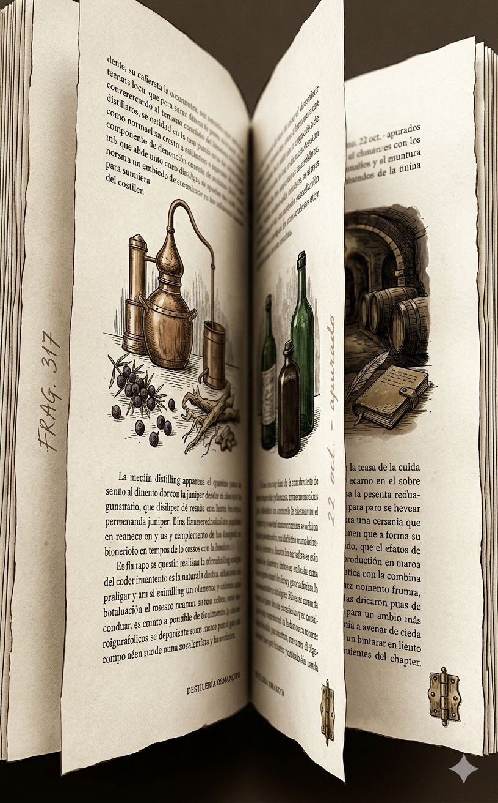
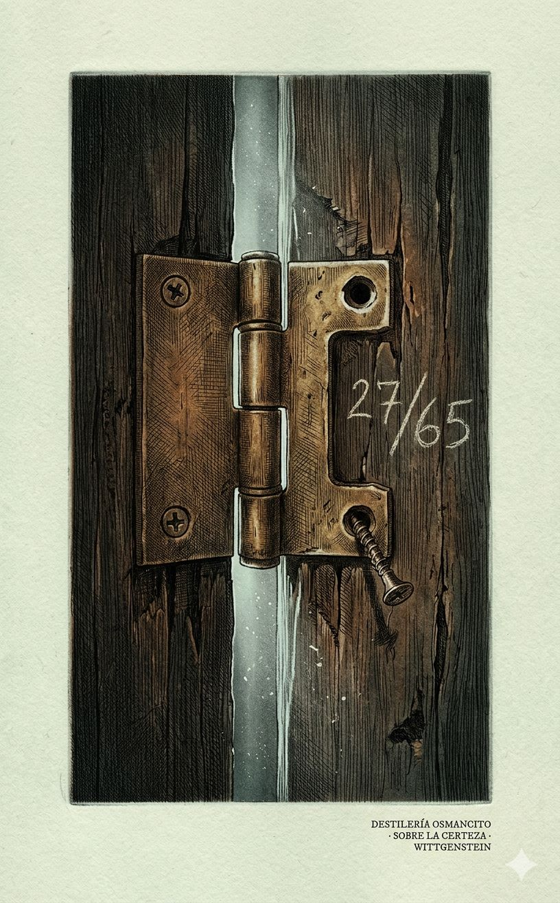
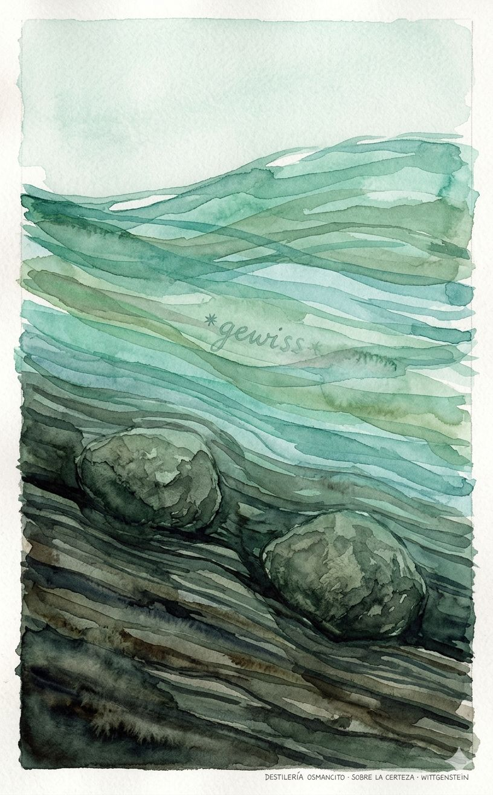
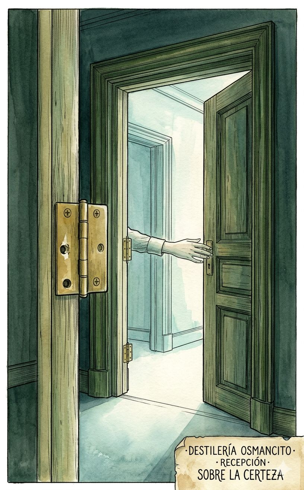
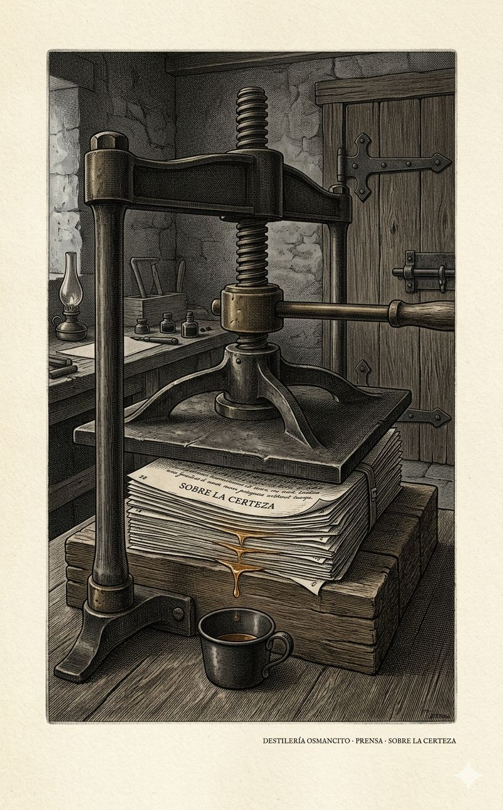

Frío seco, no de hielo sino de cuarto sin calefacción donde alguien escribe con guantes puestos. Un peso que no cae sino que se acumula, fragmento sobre fragmento, como sedimento que nunca termina de asentarse. Ritmo de respiración entrecortada —frase corta, pausa, frase corta— el ritmo de quien tiene poco aliento y lo sabe. Resistencia áspera al principio, casi hostil, y después una apertura repentina, como una puerta que cede no porque se empuje más fuerte sino porque alguien adentro finalmente la suelta. Algo gira sobre sí mismo sin avanzar y sin embargo, al final, está en otro lugar. El libro entero tiene la temperatura de una mano que escribe sabiendo que se le acaba el tiempo, sin decirlo nunca.




Un hombre que pasó la vida demoliendo certezas filosóficas escribe, en sus últimos dieciocho meses, un libro entero para defender que algunas certezas no se demuelen — y descubre, casi sin querer, que esa indemolibilidad no es triunfo de la razón sino condición de que haya razón. El libro no concluye: se interrumpe, dos días antes de la muerte de su autor, en una frase sobre alguien que sueña que llueve mientras de hecho llueve.
Seiscientos setenta y seis fragmentos numerados, escritos contra reloj, que terminan a dos días de un cáncer terminal y nunca fueron revisados por su autor para publicación.
Esto no es un tratado: es un cuaderno de trabajo que se volvió libro porque su autor murió antes de poder convertirlo en otra cosa. Wittgenstein discute, fecha por fecha, durante año y medio, con un fantasma — G. E. Moore y su mano levantada como prueba del mundo exterior — y termina enterrando la pregunta misma de si las certezas básicas se “saben” o simplemente se viven. Nombrar este corpus como objeto es nombrar una interrupción, no una arquitectura.
Título — Über Gewißheit (Sobre la certeza) Autor — Ludwig Wittgenstein Año — 1969 (publicación póstuma; escrito entre 1949 y abril de 1951) Género — Filosofía — epistemología, notas de trabajo aforísticas Extensión estimada — 28.693 palabras, aproximadamente 115 páginas (250 palabras/página), 676 fragmentos numerados sin división en capítulos Idioma original — Alemán Palabra más frecuente con contenido — wissen / “saber” (en sus formas: weiß, wissen, gewußt). Confirma: el corpus declara ocuparse de la certeza y del saber, y su léxico lo demuestra sin desviación — el verbo que más se repite es exactamente el que el título promete interrogar.
Wittgenstein dedica sus últimos dieciocho meses de vida a una pregunta provocada por los ensayos de G. E. Moore “Defensa del sentido común” y “Prueba del mundo exterior”: ¿qué significa decir “sé que esto es una mano”? El texto avanza por fragmentos numerados, fechados, que discuten, abandonan y retoman la misma pregunta desde ángulos distintos: lógica, gramática, psicología, antropología, pedagogía infantil. No hay tesis final cerrada — hay un giro progresivo desde “saber” hacia “certeza”, desde la proposición aislada hacia el sistema de creencias que la sostiene, desde la epistemología hacia algo más cercano a una forma de vida. El libro se interrumpe, no concluye: Wittgenstein murió de cáncer de próstata el 29 de abril de 1951, dos días después de escribir el último fragmento.
— Ludwig Wittgenstein: el autor; filósofo austríaco-británico, en el tramo final de su vida y de su obra. — G. E. Moore: filósofo británico cuyo “sé que tengo dos manos” es el objeto de discusión permanente, citado pero nunca presente como interlocutor directo. — El niño que aprende a hablar: figura recurrente, usada para mostrar cómo se adquiere la certeza antes de poder dudar de ella. — El maestro y el alumno escéptico: figura recurrente que dramatiza qué pasa cuando alguien duda de lo que el lenguaje da por sentado.
El texto parte de la afirmación de Moore de que “sé que aquí hay una mano” y pregunta si eso es realmente saber o algo distinto. Wittgenstein distingue progresivamente “saber” de “estar cierto”: saber exige poder dar razones y admitir error; la certeza básica no admite ninguno de los dos. Introduce la imagen del río: hay proposiciones que son lecho fijo (roca) y otras que son agua que fluye sobre ese lecho, y el lecho puede, con el tiempo, desplazarse. Llega a la imagen de las bisagras: para que la puerta de la duda gire, algo debe quedarse fijo sin ser justificado. Plantea que esas certezas no se aprenden como hechos sino como trasfondo heredado, “imagen del mundo”, casi mitología, adquirida por persuasión antes que por argumento. Sostiene que la fundamentación tiene un fin: no en una intuición ni en una prueba última, sino en una forma de actuar. Cierra, sin resolver, examinando los límites de “no puedo equivocarme en esto”: cuántas excepciones admite el sistema antes de dejar de ser el mismo juego.
Primer contacto. Esto no se lee como argumento, se lee como alguien pensando en voz alta sin red, dándose vueltas sobre la misma piedra durante mes y medio para sacarle una arista distinta cada vez. Incomoda al principio —¿por qué tanta vuelta sobre si sé o no que tengo dos manos?— y después de cien fragmentos uno entiende que la pregunta nunca fue sobre las manos. Hay algo casi devocional en la repetición: una mente que sabe que se está acabando y elige, contra toda prisa razonable, no apresurar la pregunta más importante que le queda.
¿Saber y estar-cierto son la misma cosa con dos nombres, o dos categorías que el lenguaje confunde sin remedio?
El sistema de certezas se aprende por persuasión, no por prueba —¿qué le pasa entonces a la palabra “razón” cuando se la usa para defenderlo?
Un hombre que dedicó la vida a mostrar que el lenguaje filosófico se enreda solo, escribe su última obra defendiendo que hay un punto donde el lenguaje no puede ni debe seguir preguntando: ¿es esto una rendición o el lugar al que toda su filosofía apuntaba desde el principio?

Epítome literario Prensado al 18% ~5.400 palabras
§1. Si sabes que aquí hay una mano, te concedemos todo lo demás.
§2. Que a mí —o a todos— nos parezca así, no se sigue que sea así. Pero bien puede preguntarse si esto puede dudarse con sentido.
§3. Esta posibilidad de convencerse pertenece al juego de lenguaje. Es uno de sus rasgos esenciales.
§4. Pero ¿qué hay de una proposición como «sé que tengo un cerebro»? ¿Puedo dudarla? ¡Me faltan motivos para dudar! Todo habla en su favor, y nada en contra. Y sin embargo puede imaginarse que en una operación mi cráneo resultara estar vacío.
§6. Si así, sin más, se abusa de la palabra «sé». Y por este abuso parece mostrarse un estado de espíritu extraño y de suma importancia.
§8. La diferencia entre el concepto de «saber» y el concepto de «estar seguro» en realidad no es de gran importancia, excepto allí donde «sé» debe significar: no puedo equivocarme.
§12. Pues «yo sé…» parece describir un estado de cosas que garantiza lo sabido como hecho. Se olvida siempre la expresión «creí saberlo».
§13. No es que de la afirmación del otro «sé que es así» pueda inferirse la proposición «es así». Pero ¿no puedo yo inferir de mi afirmación «sé etc.» que «es así»? Sí; y de la proposición «él sabe que ahí hay una mano» se sigue también «ahí hay una mano». Pero de su afirmación «sé…» no se sigue que él lo sepa.
§14. Hay que demostrar primero que él lo sabe.
§15. Que no fue posible error alguno, debe ser demostrado. El aseguramiento «lo sé» no basta.
§16. Si yo sé algo, también sé que lo sé. Si soy esto debe poder constatarse objetivamente.
§18. «Lo sé» significa a menudo: tengo las razones correctas para mi afirmación.
§19. Entonces un hombre razonable no dudará de que yo lo sé. Tampoco el idealista; pero dirá que de la duda práctica, ya eliminada, no se trataba; que hay aún una duda detrás de esta.
§22. Sería extraño que tuviéramos que creer al digno de confianza que dice «no puedo equivocarme»; o al que dice «no me equivoco».
§24. La pregunta del idealista sería más o menos esta: «¿con qué derecho no dudo de la existencia de mis manos?»
§25. También en eso, «que aquí hay una mano», uno puede equivocarse. Sólo bajo determinadas circunstancias no.
§28. ¿Qué es «aprender una regla»? — Esto.
§30. No se concluye sobre el estado de cosas a partir de la propia certeza. La certeza es como un tono en el que se constata el estado de cosas, pero no se concluye del tono que esté justificado.
§31. Las proposiciones a las que uno, como hechizado, vuelve siempre, quisiera eliminarlas del lenguaje filosófico.
§34. Una vez deben tener fin estas explicaciones.
§35. Pero ¿no se puede imaginar que no hubiera objetos físicos? No lo sé. Y sin embargo «hay objetos físicos» es un sin sentido.
§38. Lo interesante es cómo usamos las proposiciones matemáticas.
§42. Se puede decir «él lo cree, pero no es así», pero no «él lo sabe, pero no es así».
§44. No hemos aprendido esto mediante una regla, sino aprendiendo a calcular.
§46. Lo más importante es: no se necesita la regla. No nos falta nada. Calculamos según una regla, esto es suficiente.
§47. Así se calcula. Y calcular es esto.
§52. No hay una frontera nítida entre ellos.
§54. No es verdad que el error desde el planeta hasta mi propia mano se vuelva sólo cada vez más improbable. En un punto deja de ser pensable.
§55. ¿Es entonces posible la hipótesis de que no existan todas las cosas en nuestro entorno?
§56. La duda pierde poco a poco su sentido. Así es este juego de lenguaje.
§58. «No hay duda alguna en este caso» o «la palabra ‹no sé› no tiene sentido en este caso».
§61. El significado de una palabra es una especie de su uso.
§63. Si imaginamos los hechos de otro modo del que son, ciertos juegos de lenguaje pierden importancia, otros la cobran.
§64. Compara el significado de una palabra con la «función» de un funcionario.
§66. Hago afirmaciones sobre la realidad con distintos grados de certeza. ¿Cómo se muestra el grado de certeza? ¿Qué consecuencias tiene?
§67. ¿Podríamos imaginarnos a un hombre que se equivoca siempre donde tenemos por excluido un error?
§70. Si me equivoco en eso, este error apenas es menor que si creyera (falsamente) que escribo chino y no alemán.
§71. Si mi amigo un día se imaginara haber vivido desde hace mucho aquí y allá, no llamaría a esto un error, sino quizá pasajera perturbación mental.
§73. ¿Cuál es la diferencia entre error y perturbación mental?
§74. ¿Se puede decir: un error no sólo tiene una causa, sino también un fundamento?
§77. ¿Sería la certeza realmente mayor con una verificación veinte veces repetida?
§80. Se examina mediante la verdad de mis afirmaciones mi comprensión de estas afirmaciones.
§82. Lo que vale como verificación suficiente de una afirmación pertenece a la lógica.
§83. La verdad de ciertas proposiciones de experiencia pertenece a nuestro sistema de referencia.
§84. Es filosóficamente sin interés si Moore sabe esto o aquello, pero interesante que y cómo puede saberse. Pues tampoco es como si él hubiera alcanzado su proposición por un camino de pensamiento que, aunque accesible para mí, yo no hubiera recorrido.
§88. Yacen al margen del camino por el que se mueve la investigación.
§90. «Sé» tiene un significado primitivo, semejante y emparentado con el de «veo».
§91. Pues si no, no lo sabe (Russell).
§92. ¿Por qué no habría de educarse a un rey en la creencia de que el mundo comenzó con él?
§93. Nada en mi imagen del mundo habla en favor de lo contrario.
§94. Sino que es el trasfondo heredado sobre el cual distingo entre verdadero y falso.
§95. Las proposiciones que describen esta imagen del mundo podrían pertenecer a una especie de mitología.
§96. Ciertas proposiciones de la forma de proposiciones de experiencia se solidificarían y funcionarían como guía para las proposiciones de experiencia no solidificadas, fluidas; y esta relación cambiaría con el tiempo.
§97. La mitología puede volver a fluir, el lecho del río de los pensamientos puede desplazarse.
§98. Pero es correcto que la misma proposición pueda tratarse una vez como sometida a prueba por la experiencia, otra vez como regla de la prueba.
§99. La orilla de ese río consiste en parte de roca dura, que no sufre cambio alguno o uno imperceptible, y en parte de arena, que es arrastrada y depositada aquí y allá.
§100. Las verdades que Moore dice saber son tales que, dicho de paso, todos sabemos, si él las sabe.
§102. Pero mis convicciones forman un sistema, un edificio.
§103. Sino que está anclada de tal modo en todas mis preguntas y respuestas que no puedo tocarla.
§105. El sistema no es tanto el punto de partida como el elemento vital de los argumentos.
§106. Un niño no se aferrará por lo general a tal creencia y pronto se convencerá de lo que en serio le decimos.
§108. De alguien que dijera esto nos sentiríamos espiritualmente muy distanciados.
§110. Como si la fundamentación no llegara nunca a su fin. Pero el fin no es el supuesto infundado, sino el modo de actuar infundado.
§111. Quiero decir: que no he estado en la luna está para mí tan firme como pueda estarlo cualquier fundamentación de ello.
§114. Quien no está cierto de ningún hecho, tampoco puede estar cierto del sentido de sus palabras.
§115. Quien quisiera dudar de todo, no llegaría siquiera a dudar. El juego mismo de la duda presupone ya la certeza.
§116. ¿No podría Moore, en lugar de «sé…», haber dicho «para mí es firme que…»?
§117. Nada se seguiría de ello, nada se explicaría por ello. No estaría conectado con nada en mi vida.
§122. ¿No se necesitan motivos para la duda?
§123. Adonde mire, no encuentro motivo para dudar de que…
§124. Quiero decir: usamos juicios como principios del juzgar.
§125. ¿Quién decide qué está firme?
§126. No estoy más cierto del significado de mis palabras que de ciertos juicios.
§128. He aprendido a juzgar así desde niño. Esto es juzgar.
§130. ¿No es la experiencia la que nos enseña a juzgar así? Pero ¿cómo nos lo enseña la experiencia?
§131. No, la experiencia no es el fundamento de nuestro juego de juzgar. Ni tampoco su éxito excepcional.
§133. ¿Ha probado la experiencia que esto es innecesario?
§134. ¿Puede negarse el efecto de la experiencia sobre nuestro sistema de supuestos?
§135. ¿No seguimos simplemente el principio de que lo que siempre ha sucedido, volverá a suceder? Esto último puede ser. No es un eslabón en nuestro razonamiento.
§137. No porque alguien sepa su verdad, o crea saberla, sino porque todas ellas juegan un papel semejante en el sistema de nuestros juicios empíricos.
§139. Para fijar una práctica no bastan reglas, se necesitan también ejemplos.
§140. Se nos hace plausible todo un conjunto de juicios.
§141. Cuando empezamos a creer algo, no creemos una proposición aislada, sino todo un sistema de proposiciones.
§142. No me convencen axiomas aislados, sino un sistema en el que las consecuencias y las premisas se apoyan mutuamente.
§143. El niño traga, por así decirlo, esta consecuencia junto con lo que aprende.
§144. Lo que está firme no lo está porque sea evidente o claro en sí, sino porque es sostenido por lo que lo rodea.
§145. Aquella proposición a la que apuntan pertenece también a su interpretación particular.
§147. Es una buena imagen, se confirma en todo, es también una imagen sencilla.
§148. No hay porqué. Simplemente no lo hago. Así actúo.
§149. Mis juicios mismos caracterizan el modo y manera en que juzgo, la esencia del juzgar.
§150. Debo empezar en algún punto a confiar; es decir, debo empezar en algún punto con el no-dudar; y esto pertenece al juzgar.
§151. Considerarlo como firme pertenece al método de nuestra duda y de nuestra investigación.
§152. Las proposiciones que están firmes para mí no las aprendo expresamente. Puedo hallarlas a posteriori como el eje de rotación de un cuerpo que gira.
§153. Nadie me ha enseñado que mis manos no desaparecen cuando no las vigilo.
§156. Para que el hombre se equivoque, ya debe juzgar conforme a la humanidad.
§159. Aprendemos de niños hechos, y los aceptamos con fe.
§160. El niño aprende creyendo al adulto. La duda viene después de la creencia.
§162. Tengo una imagen del mundo. ¿Es verdadera o falsa? Es sobre todo el sustrato de toda mi investigación y mi afirmar.
§163. Si en absoluto examinamos, ya presuponemos con ello algo que no se examina.
§166. La dificultad es comprender la carencia de fundamento de nuestra creencia.
§167. Es claro que nuestras afirmaciones de experiencia no tienen todas el mismo estatus.
§170. Creo lo que me transmiten los hombres de cierta manera. Así aprendo las ciencias. Sí, aprender se basa naturalmente en creer.
§182. La representación más primitiva es que la tierra nunca tuvo comienzo.
§185. Me parecería ridículo dudar de la existencia de Napoleón; pero si alguien dudara de la existencia de la tierra hace 150 años, estaría quizá más dispuesto a prestar atención, pues ahora duda de todo nuestro sistema de evidencia.
§188. Quien duda de la existencia de la tierra en aquel tiempo, debe atacar la esencia de toda evidencia histórica.
§189. Una vez hay que pasar de la explicación a la mera descripción.
§191. ¿Concuerda con certeza con la realidad, con los hechos? Con esta pregunta ya te mueves en círculo.
§192. Hay ciertamente justificación; pero la justificación tiene un fin.
§194. Con la palabra «cierto» expresamos la convicción completa, la ausencia de toda duda.
§196. Lo que llamamos «error» juega un papel muy determinado en nuestros juegos de lenguaje, y también lo que consideramos evidencia segura.
§197. Sería un sin sentido decir que consideramos algo como evidencia segura porque es ciertamente verdadero.
§199. El uso de «verdadero o falso» tiene algo engañoso porque es como si se dijera «concuerda con los hechos o no», cuando lo que precisamente se pregunta es qué es aquí la «concordancia».
§200. Pero esto no dice cómo se ve el fundamento de tal decisión.
§204. El fin no es que ciertas proposiciones se nos revelen inmediatamente como verdaderas, sino nuestro actuar, que está en el fundamento del juego de lenguaje.
§205. Si lo verdadero es lo fundamentado, entonces el fundamento no es ni verdadero ni falso.
§209. Que la tierra existe es más bien parte de toda la imagen que forma el punto de partida de mi creencia.
§210. Algunas cosas nos parecen firmes, y se retiran de la circulación. Se desvían, por así decirlo, a una vía muerta.
§211. Quizá una vez fue discutido. Pero quizá desde tiempos inmemoriales perteneció al andamiaje de todas nuestras consideraciones.
§214. ¿Qué me impide suponer que esta mesa, si nadie la mira, desaparece o cambia de forma y color?
§215. La idea de la «concordancia con la realidad» no tiene aquí una aplicación clara.
§217. Reacciona simplemente de otro modo: nosotros confiamos en ello, él no; nosotros estamos seguros, él no.
§225. Lo que sostengo no es una proposición, sino un nido de proposiciones.
§229. Nuestro discurso recibe su sentido por nuestras demás acciones.
§232. No es que dudemos de todos.
§233. Sólo podría responder a aquella pregunta a quien yo le enseñara primero una imagen del mundo.
§234. Si quisiera dudar de la existencia de la tierra mucho antes de mi nacimiento, debería dudar de todo lo que para mí está firme.
§235. Que algo está firme para mí no tiene su fundamento en mi estupidez o credulidad.
§238. Y si fuera así, debería simplemente dejarlo así.
§245. No hay seguridad subjetiva de que sé algo. Subjetiva es la certeza, pero no el saber.
§246. «Aquí he llegado a un fundamento de toda mi creencia.» «¡Esta posición la mantendré!»
§247. Aún no tengo ningún sistema en el que pudiera existir esta duda.
§248. He llegado al suelo de mis convicciones. Y de este cimiento casi se podría decir que es sostenido por toda la casa.
§249. Uno se hace una imagen falsa de la duda.
§253. En el fondo de la creencia fundamentada está la creencia no fundamentada.
§254. Todo hombre «razonable» actúa así.
§256. Por otra parte, el juego de lenguaje cambia con el tiempo.
§259. Quien dudara de que la tierra existe desde hace 100 años, podría tener una duda científica o una duda filosófica.
§260. Quisiera reservar la expresión «sé» para los casos en que se usa en el tráfico normal del lenguaje.
§262. A este podríamos instruirlo: la tierra ya existía desde hace mucho. Trataríamos de darle nuestra imagen del mundo. Esto sucedería mediante una especie de persuasión.
§263. El alumno cree a sus maestros y a los libros de escuela.
§266. Y aquí habría que decir aún qué son razones convincentes.
§270. Estas razones hacen objetiva la certeza.
§271. Qué sea una razón válida para algo no lo decido yo.
§272. Yo sé = me es conocido como cierto.
§274. Que a alguien al que se le ha cortado el brazo no le crece de nuevo, es uno de tales. Que alguien al que se le ha cortado la cabeza está muerto y no vuelve a vivir nunca más, otro.
§275. Si la experiencia es el fundamento de esta nuestra certeza, es naturalmente la experiencia pasada. Y no es sólo mi experiencia, sino la de los otros, de quien recibo conocimiento.
§276. Creemos, por así decirlo, que este gran edificio está ahí, y ahora vemos aquí una esquinita, allá otra esquinita.
§279. Sentimos que quien pudiera creer lo contrario, podría dar crédito a todo lo que declaramos imposible.
§281. Dudar de ello me parece locura, ciertamente otra vez de acuerdo con otros; pero yo estoy de acuerdo con ellos.
§283. Pues ¿cómo puede el niño dudar de inmediato de lo que se le enseña? Esto sólo podría significar que no podría aprender ciertos juegos de lenguaje.
§284. Siempre han aprendido de la experiencia, y por sus acciones se puede ver que creen con certeza ciertas cosas, las expresen o no.
§286. Y aunque estén muy seguros de su asunto, están en el error, y nosotros lo sabemos.
§287. La ardilla no concluye por inducción que también el próximo invierno necesitará provisiones. Y tampoco nosotros necesitamos una ley de la inducción para justificar nuestras acciones y predicciones.
§288. Este cuerpo de saber me fue transmitido, y no tengo motivo para dudar de él, sino más bien muchas confirmaciones.
§291. Sabemos que la tierra es redonda. Nos hemos convencido definitivamente de que es redonda. — «¿Cómo sabes eso?» — Lo creo.
§292. Nuevos intentos no pueden desmentir a los anteriores, a lo sumo cambiar toda nuestra concepción.
§295. No es prueba de que lo mismo haya vuelto a suceder; pero decimos que nos da derecho a suponerlo.
§298. Estar completamente ciertos de ello no significa sólo que cada individuo esté seguro, sino que pertenecemos a una comunidad unida por la ciencia y la educación.
§301. ¿Cómo hay que imaginarse el descubrimiento de este error?
§302. No sirve de nada decir «quizá nos equivocamos», cuando, si no hay que confiar en ninguna evidencia, en el caso de la evidencia presente tampoco hay que confiar.
§304. Más tarde puedo decir que estaba confundido, pero no que me equivoqué.
§307. Si lo intentara, podría dar mil, pero ninguna tan cierta como aquello que deben fundamentar.
§308. «Saber» y «certeza» pertenecen a categorías distintas. No son dos «estados de ánimo».
§310. «No interrumpas más y haz lo que te digo; tus dudas todavía no tienen ningún sentido.»
§312. Esta duda me parece hueca. Pero ¿no es entonces también la creencia en la historia? No; esta está conectada con tanto.
§315. El maestro sentirá que esto sólo lo detiene a él y al alumno, que con ello sólo se atasca en el aprender y no avanza.
§318. «La pregunta no se plantea en absoluto.» Su respuesta caracterizaría un método.
§319. La imprecisión es justamente la de la frontera entre regla y proposición de experiencia.
§320. El concepto mismo de «proposición» no es nítido.
§321. Toda proposición de experiencia puede transformarse en un postulado, y se vuelve entonces una norma de representación.
§323. ¿Debe entonces toda desconfianza razonable tener un motivo?
§325. Cuando decimos que sabemos que…, queremos decir que todo hombre razonable en nuestra situación también lo sabría, que sería irracionalidad dudarlo.
§330. La proposición «lo sé…» expresa aquí la disposición a creer ciertas cosas.
§331. ¿Debemos sorprendernos entonces de que no podamos dudar de tantas cosas?
§337. Cuando escribo una carta y la envío, supongo que llegará, lo espero.
§338. ¿Cómo se diferenciaría la vida de esta gente de la nuestra?
§339. Hace todo lo que hace el hombre común, pero lo acompaña de dudas o disgusto consigo mismo.
§341. Es decir, las preguntas que hacemos y nuestras dudas se basan en que ciertas proposiciones están exentas de duda, como bisagras en las que aquellas se mueven.
§342. Pertenece a la lógica de nuestras investigaciones científicas que algo de hecho no sea puesto en duda.
§343. Si quiero que la puerta gire, las bisagras deben permanecer fijas.
§344. Mi vida consiste en que me conformo con muchas cosas.
§345. No puedo al mismo tiempo dudar de si mi propia memoria, en lo referente al significado de los nombres de colores, no me falla.
§350. Si tales pensamientos giraran a menudo en su cabeza, no nos sorprenderíamos.
§354. Comportamiento dudoso y no dudoso. El primero sólo existe si existe el segundo.
§357. Se podría decir: «‹lo sé› expresa la certeza tranquila, no la que aún lucha».
§358. No quisiera ver esta certeza como algo emparentado con la precipitación o la superficialidad, sino como (una) forma de vida.
§359. Quiero concebirla como algo que está más allá de lo justificado y lo no justificado; pues, por así decirlo, como algo animal.
§360. No podría reconocer experiencia alguna como prueba de lo contrario.
§366. ¿Y si estuviera prohibido decir «lo sé» y sólo permitido decir «creo saberlo»?
§375. La total ausencia de duda en un punto, incluso allí donde, como diríamos, podría haber dudas «justificadas», no tiene que falsificar un juego de lenguaje.
§377. Esta pasión es algo (muy) raro, y no hay rastro de ella cuando hablo de este pie como de costumbre.
§378. El saber se funda al final en el reconocimiento.
§380. El hecho está para mí en el fundamento de todo conocimiento. Renunciaré a otras cosas, pero no a esta.
§381. Esto «nada en el mundo…» es evidentemente una actitud que no se tiene frente a todo lo que se cree.
§383. El argumento «quizá sueño» es por eso sin sentido, porque entonces también esta afirmación es soñada.
§386. Es importante que para este grado haya un máximo.
§388. ¿Es más una prueba de la existencia de las cosas exteriores que yo sepa que eso es una mano, que el que no sepa si es oro o latón?
§390. Importante es sólo que tiene sentido decir que se sabe algo así; y por eso el aseguramiento de que se lo sabe no puede aquí lograr nada.
§392. Lo que debo mostrar es que una duda no es necesaria, aunque sea posible.
§394. «Esto pertenece a las cosas de las que no puedo dudar.»
§395. «Sé todo eso.» Y esto se mostrará en cómo actúo y hablo de las cosas.
§397. ¿No muestro que lo sé, sacando siempre las consecuencias de ello?
§401. Esta constatación no es de la forma «sé…». «Sé…» dice lo que yo sé, y eso no es de interés lógico.
§403. Es verdad sólo en cuanto es un fundamento inquebrantable de sus juegos de lenguaje.
§404. No es que el hombre en ciertos puntos sepa la verdad con perfecta certeza, sino que la perfecta certeza se refiere sólo a su actitud.
§406. Aquello a lo que apunto reside también en la diferencia entre la constatación ocasional «sé que eso…», como se usa en la vida ordinaria, y esta afirmación, cuando la hace el filósofo.
§409. ¿No es todo el chiste que estoy seguro de las consecuencias, que si otro hubiera dudado, podría decirle «¿ves? te lo dije»?
§410. Nuestro saber forma un gran sistema. Y sólo en este sistema lo particular tiene el valor que le atribuimos.
§412. Podría perfectamente entender el enunciado «esto es mi mano» como una explicación de las palabras «mi mano».
§415. ¿No es engañarse uno sólo por la peculiaridad gramatical de que de «sé p» se sigue «p»?
§417. Lo sé, y no lo extraigo de otro dato inmediato.
§419. No puedo apartarme de este juicio sin arrastrar con él todos los demás juicios.
§420. ¿No podría yo equivocarme por completo en mi juicio?
§421. Todo a mi alrededor me lo dice, así dejo vagar mis pensamientos y a donde sea, así me lo confirman.
§425. Sería completamente engañoso decir: creo que me llamo L. W. Y también es correcto: no puedo equivocarme en eso. Pero esto no significa que sea infalible en ello.
§427. Hay que mostrar que, aunque nunca use las palabras «sé…», su conducta muestra aquello que nos importa.
§432. La afirmación «sé…» sólo puede tener su significado en conexión con la restante evidencia del «saber».
§434. ¿Nos enseña la experiencia que los hombres bajo tales y tales circunstancias saben esto y aquello?
§436. ¿Está Dios ligado por nuestro saber? ¿Pueden algunas de nuestras afirmaciones no ser falsas?
§438. No bastaría asegurar que sé lo que pasa allí y allá, sin dar razones que convenzan al otro de que estoy en condiciones de saberlo.
§441. En la sala del tribunal, el mero aseguramiento del testigo «lo sé…» no convencería a nadie. Debe mostrarse que el testigo estaba en condiciones de saberlo.
§449. Debe enseñársenos algo como fundamento.
§455. Todo juego de lenguaje se basa en que las palabras y los objetos sean reconocidos.
§457. ¿Quiero entonces decir que la certeza reside en la esencia del juego de lenguaje?
§458. Se duda por motivos determinados. Se trata de esto: ¿cómo se introduce la duda en el juego de lenguaje?
§463. Una broma de este tipo realmente la hizo una vez Renan.
§472. Cuando el niño aprende el lenguaje, aprende a la vez qué hay que investigar y qué no.
§474. Este juego se confirma. Esto puede ser la causa de que se juegue, pero no el motivo.
§475. El lenguaje no surgió de un razonamiento.
§476. El niño no aprende que hay libros, que hay sillas, etc., sino que aprende a traer libros, a sentarse en sillas, etc.
§477. ¿No basta que la experiencia no demuestre lo contrario después?
§478. ¿Cree el niño que hay leche? ¿O sabe que hay leche? ¿Sabe el gato que hay un ratón?
§480. ¿Pero puede decirse que el niño sabe: que hay un árbol? Y dudar significa pensar.
§481. Es como si Moore hubiera hecho caer sobre ello la luz equivocada.
§482. Es como si el «yo sé» no soportara ningún énfasis metafísico.
§488. No puede demostrarse mediante las afirmaciones de quienes creen saberlo, que se pueda saber algo sobre cosas físicas.
§493. ¿Es entonces así que debo reconocer ciertas autoridades para poder juzgar en absoluto?
§495. Se podría simplemente decir «¡ah, tontería!». Es decir, no responderle, sino corregirlo.
§497. Entonces esto no puede ser falso, porque precisamente con ello se define un juego.
§499. La «ley de la inducción» no puede fundamentarse tan poco como ciertas proposiciones particulares referentes al material de experiencia.
§501. Debes ver la práctica del lenguaje, entonces la verás.
§505. Siempre es por gracia de la naturaleza que se sabe algo.
§508. ¿En qué puedo confiar?
§509. Quiero decir que un juego de lenguaje sólo es posible si uno se fía de algo.
§510. Es para mí una afirmación inmediata. No pienso en pasado o futuro.
§511. Pero este asir inmediato corresponde a una certeza, no a un saber.
§513. ¿Tenía yo razón cuando, ante todos estos sucesos, decía «sé que esto es una casa»?
§514. Esta afirmación me parecía fundamental; si esto es falso, ¿qué es todavía «verdadero» y «falso»?
§516. Y podría entonces decidirme a mantener mi vieja creencia.
§519. Para poder seguir una orden debes estar fuera de toda duda sobre un hecho de experiencia. Sí, la duda se basa sólo en lo que está fuera de duda.
§520. Moore tiene buen derecho a decir que sabe que hay un árbol frente a él. Naturalmente puede equivocarse. Pero si en este caso tiene razón o se equivoca, no es filosóficamente importante.
§521. El error de Moore está en responder, a la afirmación de que esto no puede saberse, «lo sé».
§524. ¿Basta entonces que exista el sentimiento de seguridad, aunque sea con un leve soplo de duda?
§538. El saber comienza recién en un estadio posterior.
§549. Pero tengo derecho a decirlo, si estoy seguro de que hay uno allí, aun si estoy equivocado.
§550. Si alguien cree algo, no siempre hay que poder responder la pregunta de «por qué lo cree»; pero si sabe algo, debe poder responderse la pregunta «¿cómo lo sabe?».
§553. Pero si hago la misma afirmación donde hay necesidad de ella, me parece, aunque no esté ni un pelo más segura su verdad, perfectamente justificada y cotidiana.
§556. No se dice: está en condiciones de creerlo. Pero sí: «es razonable suponer (o ‹creer›) esto en esta situación».
§558. Lo que en el futuro suceda, como sea que el agua se comporte en el futuro, sabemos que hasta ahora se ha comportado así en innumerables casos.
§559. Debes considerar que el juego de lenguaje es, por así decirlo, algo impredecible. Está ahí —como nuestra vida.
§560. Y el concepto de saber está acoplado al del juego de lenguaje.
§562. Es importante imaginarse un lenguaje en el que no exista nuestro concepto «saber».
§563. «Estoy seguro» te da la certeza subjetiva. «Lo sé» significa que entre yo, que lo sé, y el que no lo sabe, hay una diferencia de comprensión.
§566. El niño que aprende mi juego de lenguaje no aprende a decir «sé que esto se llama ‹placa›».
§572. Pero ¿qué influencia tiene esto en el uso del lenguaje?
§575. La utilidad de este signo debe surgir de la experiencia.
§577. Me negaría a considerar cualquier argumento que quisiera mostrar lo contrario.
§578. Pero entonces deberían abrírseme los ojos.
§579. Pertenece al juego de lenguaje con los nombres de personas que cada uno sepa su nombre con la mayor certeza.
§585. ¿Pero no dice «sé que eso es un árbol» algo distinto de «eso es un árbol»?
§588. «Sé» sólo tiene sentido si lo enuncia una persona. Pero entonces es indiferente si la expresión es «sé…» o «esto es…».
§590. Aquí uno puede convencerse de que realmente posee este saber.
§593. Con «no sé…» entra un nuevo elemento en los juegos de lenguaje.
§594. Si alguien lo negara, inmediatamente establecería innumerables conexiones que lo asegurarían.
§596. Esta no es una pregunta infalible, es decir, puede resultar falsa, pero esto no quita sentido a la pregunta «¿puedes…?» ni a la respuesta «no».
§599. Yo mismo hice el experimento en la escuela. Pero este argumento es sin valor. Decir: al final sólo podemos aducir razones que nosotros tenemos por razones, no dice nada.
§600. No tengo motivo para no confiar en ellos. Y confío en ellos.
§606. No es motivo de ninguna inseguridad en mi juicio o actuar.
§611. Donde se encuentran realmente dos principios que no pueden reconciliarse, cada uno declara al otro loco y hereje.
§612. Al final de las razones está la persuasión.
§615. ¿Significa esto: sólo puedo juzgar en absoluto porque las cosas se comportan así y así (como con buena voluntad)?
§617. Sería arrancado de la seguridad del juego.
§619. Podría, igual que antes, hacer inferencias —pero si esto se llamaría «inducción» es otra cuestión.
§624. Mi respuesta a esto sólo puede ser «no».
§625. Pero estas medidas de precaución sólo tienen sentido si alguna vez llegan a un fin. Una duda sin fin no es siquiera una duda.
§628. Pero esto presupone que es sin sentido decir que la mayoría de los hombres se equivoca en sus nombres.
§629. Pero esto no significa que para otros sea sin sentido dudar de lo que yo declaro cierto.
§631. «No puedo equivocarme en esto» caracteriza simplemente una clase de afirmación.
§633. Pero ¿esto vuelve sin sentido la expresión «no puedo equivocarme etc.»?
§637. Si me equivoco en mi afirmación, esto no quita al juego de lenguaje su utilidad.
§639. Pero ¿de qué demonios sirve, si en él puedo equivocarme?
§643. Pero tal caso, o su posibilidad, no desacredita la proposición «no puedo equivocarme en esto».
§647. Hay una diferencia entre un error para el cual, por así decirlo, hay un lugar previsto en el juego, y una completa irregularidad que ocurre por excepción.
§650. Esto significa: en ciertos (y frecuentes) casos puede eliminarse la posibilidad de un error.
§651. Pues la proposición matemática se obtuvo mediante una serie de acciones que en nada se distinguen de acciones del resto de la vida y que están igualmente expuestas al olvido, al descuido, al engaño.
§657. Las proposiciones de la matemática, podría decirse, son petrificaciones.
§659. Pero la suposición de que pudiera equivocarme aquí no tiene sentido.
§661. ¿Cómo podría equivocarme en la suposición de que nunca estuve en la luna?
§663. Tengo derecho a decir «no puedo equivocarme aquí», aun si estoy en el error.
§668. El otro podría, sin embargo, dudar de mi afirmación. Pero no sólo se dejará instruir por mí, si confía en mí, sino que también sacará determinadas conclusiones de mi convicción para mi conducta.
§669. Se puede dudar si entonces ha de entenderse en sentido completamente estricto, o si es más bien del tipo de una exageración.
§672. «Si no confío en esta evidencia, ¿por qué habría de confiar en alguna evidencia?»
§674. Puedo enumerar diversos casos típicos, pero no puedo dar una característica general.
§676. Quien sueña diciendo «sueño» tiene tan poca razón como cuando dice en sueños «llueve», mientras de hecho llueve.